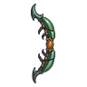
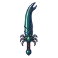
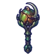

ด้วงแรดยักษ์
มอนธาตุดิน Lv 74–99
เจอที่
| แมพ | โซน | Lv | ภูมิภาค |
|---|---|---|---|
| ป่าดึกดำบรรพ์ | 90–95 | ที่ราบสูง | |
| ป่าดึกดำบรรพ์ | หุบรังไข่ | 92–96 | ที่ราบสูง |
| ป่าดึกดำบรรพ์ | ใจกลางป่าโบราณ | 96–99 | ที่ราบสูง |
| หนองน้ำมันดิน | 74–92 | ที่ราบสูง | |
| บ่อน้ำร้อนดึกดำบรรพ์ | 74–92 | ที่ราบสูง | |
| บ่อน้ำร้อนดึกดำบรรพ์ | ลานหินปูนขั้นบันได | 86–92 | ที่ราบสูง |
| หอดาวร่วง | ชั้นหอดาวร่วง | 89–99 |
ค่าสถานะตามเลเวล
| Lv | HP | ATK | DEF | MDEF | EXP | Job |
|---|---|---|---|---|---|---|
| 74 | 52,456 | 178–267 | 59 | 11 | 113 | 85 |
| 86 | 82,076 | 215–323 | 60 | 13 | 129 | 97 |
| 99 | 121,000 | 269–403 | 60 | 15 | 148 | 111 |
ตีด้วยธาตุไหนดี
แรงขึ้น: ไฟ ×1.5 พิษ ×1.25
เบาลง: ลม ×0.5 ดิน ×0.25
วัตถุดิบที่ดรอป
| ของ | โอกาส | |
|---|---|---|
| เขาด้วงแรด | 50% | 1 ชิ้น (15% ได้ 2) |
อุปกรณ์ที่ดรอป (10)
| ของ | โอกาส |
|---|---|
| 0.25% | |
| 0.25% | |
| 0.25% | |
| 0.25% | |
| 0.25% | |
| 0.25% | |
| 0.25% | |
 ธนูด้วงแรดยักษ์ | 0.12% |
 ดาบใหญ่เขาด้วงแรด | 0.12% |
 ออร์บด้วงแรด | 0.12% |
สกิล
ร่างแข็ง (Lv 25+) · ร่างแข็ง (Lv 60+) · ทุบพื้น (Lv 60+)